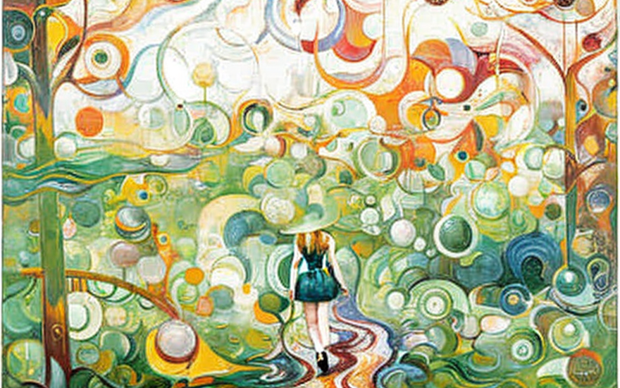
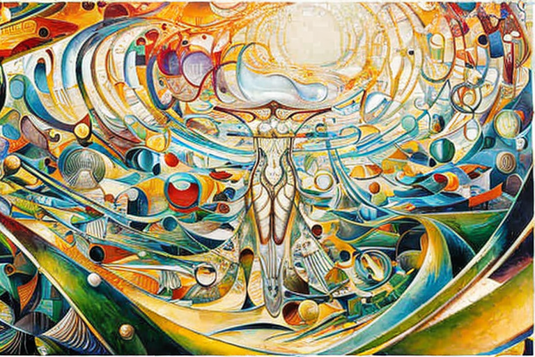

Το κορίτσι χωρίς κεφάλι και οι φίλοι της
Αρχική Σελίδα
Πίνακας Περιεχομένων
H ανύπαρκτη κεφαλή

Μια φορά κι έναν καιρό, στο χωριό του Κούφιου Ύπνου, ήταν ένα κορίτσι που γεννήθηκε χωρίς κεφάλι. Το όνομά της ήταν Λίλι, και ήταν το πιο χαρούμενο άτομο που μπορούσε κάποιος να συναντήσει. Παρά την κατάστασή της, ζούσε μια ευτυχισμένη ζωή και είχε πάντα ένα χαμόγελο στα χείλη της.
Μια μέρα, η Λίλη έκανε παρέα με τους φίλους της στο ντόπιο πάρκο. Όλοι προσπαθούσαν να βγάλουν μερικές φωτογραφίες μαζί, αλλά η Λίλη δεν μπορούσε να συμπεριληφθεί στην εικόνα. Οι φίλοι της προσπάθησαν να την συμπεριλάβουν, αλλά απλά δεν μπορούσαν να καταλάβουν πώς θα βγάλουν μια φωτογραφία προσώπων με κάποιον ακέφαλο.
Απτόητη, η Λίλη ήταν αποφασισμένη να φαίνεται στην φωτογραφία. Πρότεινε να τραβήξουν μερικές φωτογραφίες από διαφορετικές οπτικές γωνίες, ώστε να είναι μέρος της εικόνας. Οι φίλοι της θεώρησαν ότι ήταν μια υπέροχη ιδέα και έτσι άρχισαν να πειραματίζονται με διαφορετικές πόζες και στάσεις.
Στην αρχή, προσπάθησαν να βάλουν τη Λίλη να σταθεί πίσω τους, αλλά χωρίς αποτέλεσμα. Στη συνέχεια προσπάθησαν να την βάλουν να ξαπλώσει στο έδαφος, αλλά αυτό φαινόταν περίεργο. Τελικά, κατέληξαν στη λύση, έβαλαν τη Λίλη να καθίσει σε ένα παγκάκι και να ακουμπήσει τον ακέφαλο κορμό της στην πλάτη του παγκακιού.
Χρειάστηκε λίγη αναδιάταξη, αλλά κατάφεραν να βάλουν τη Λίλη να τοποθετηθεί σωστά. Οι φίλοι της στριμώχνονταν γύρω της, μορφάζοντας με χαζό τρόπο και στεκόμενοι με αστείο τρόπο. Η Λίλη έλαμψε από χαρά, ενθουσιασμένη που τελικά συμπεριλήφθηκε στην φωτογραφία.
Καθώς απομακρύνθηκαν απότομα, η Λίλη δεν μπορούσε παρά να νιώθει ευγνώμων για τους φίλους της. Παρά τις διαφορές της, πάντα έβρισκαν έναν τρόπο να την συμπεριλάβουν και να την κάνουν να νιώθει μέλος της ομάδας. Και παρόλο που δεν μπορούσε να δει το πρόσωπό της στις φωτογραφίες, ήξερε ότι το χαμόγελό της ήταν τόσο μεγάλο όσο ποτέ.
Βρίσκοντας χαρά στις αντιξοότητες

Η πάθηση της Λίλης δεν ήταν αποτέλεσμα κάποιας σπάνιας γενετικής μετάλλαξης ή υπερφυσικής κατάρας, αλλά μάλλον μια τραγική συνέπεια της δεινής οικονομικής κατάστασης της μητέρας της.
Η μητέρα της Λίλης είχε βρεθεί έγκυος σε μια στιγμή που μόλις και μετά βίας τα περνούσε οικονομικά. Ήξερε ότι δεν είχε την οικονομική δυνατότητα να κάνει παιδί, αλλά δεν είχε και την οικονομική δυνατότητα να πραγματοποιήσει μια πλήρη έκτρωση. Σε μια απελπισμένη προσπάθεια να μειώσει τα έξοδα, πήρε τη σπαρακτική απόφαση να αποβάλει μόνο το κεφάλι του αγέννητου παιδιού της, αφήνοντας το υπόλοιπο σώμα ανέπαφο.
Ήταν μια απόφαση που θα στοίχειωνε τη Λίλη για το υπόλοιπο της ζωής της. Μεγαλώνοντας, γνώριζε πολύ καλά τη διαφορά της από τα άλλα παιδιά. Ήξερε ότι της έλειπε κάτι που φαινόταν να το έχουν όλοι, αλλά δεν καταλάβαινε ακριβώς τι.
Η μητέρα της έκανε ό,τι μπορούσε για να φροντίσει τη Λίλη, αλλά η οικονομική πίεση για την ανατροφή ενός παιδιού με μια τόσο μοναδική πάθηση ήταν τεράστια. Ζούσαν σε ένα μικρό, στενό διαμέρισμα και πάλευαν να τα βγάλουν πέρα. Η μητέρα της Λίλης δούλευε πολλές ώρες σε ένα εργοστάσιο, αφήνοντας τη Λίλη να προσέχει τον εαυτό της για μεγάλο μέρος της ημέρας.
Παρ’ όλα αυτά, η Λίλη παρέμεινε ένα λαμπερό, χαρούμενο παιδί. Βρήκε χαρά στα απλά πράγματα στη ζωή, όπως το παιχνίδι με κούκλες και το διάβασμα βιβλίων. Ποτέ δεν άφησε την έλλειψη κεφαλιού να εμποδίσει την ευτυχία της.
Καθώς μεγάλωνε, οι διαφορές της Λίλης έγιναν πιο εμφανείς. Οι άνθρωποι κοιτούσαν επίμονα και ψιθύριζαν πίσω από την πλάτη της και εκείνη τους άκουγε να ψιθυρίζουν υποτιμητικά πράγματα για εκείνην. Αλλά η Λίλη αρνήθηκε να αφήσει τον αρνητισμό τους να την καταλάβει. Ήξερε ότι ήταν ξεχωριστή με τον δικό της τρόπο, και ήταν περήφανη για αυτό.
Και έτσι, όταν η Λίλη μεγάλωσε και βρέθηκε περιτριγυρισμένη από μια ομάδα φίλων που την αποδέχονταν όπως ήταν, ένιωσε σαν να είχε βρει επιτέλους τη θέση της στον κόσμο. Δεν τους ένοιαζε που δεν είχε κεφάλι, την αγαπούσαν για το ευγενικό, αστείο και στοργικό άτομο που ήταν.
Πέρα των φυσικών περιορισμών

Τώρα, αναρωτιέται κανείς, “Πώς μπορεί καν να σκεφτεί ένας άνθρωπος χωρίς κεφάλι;” Λοιπόν, επιτρέψτε μου να σας πω, η Λίλη ήταν μια ειδική περίπτωση.
Το σώμα της Λίλης ήταν εξοπλισμένο με έναν εγκέφαλο που λειτουργούσε σαν αυτόν ενός χταποδιού. Αν και μπορεί να φαίνεται παράξενο σε εμάς τους ανθρώπους, το σώμα της ήταν σε θέση να αποθηκεύει και να επεξεργάζεται πληροφορίες όπως ακριβώς θα μπορούσε οποιοσδήποτε εγκέφαλος.
Και έτσι, παρά την έλλειψη κεφαλιού, η Λίλη ήταν σε θέση να σκέφτεται και να συλλογίζεται όπως κάθε άλλο άτομο. Επικοινωνούσε με τους φίλους της μέσω χειρονομιών και κινήσεων του σώματος, και πάντα καταλάβαιναν επακριβώς τι εννοούσε.
Αλλά μερικοί από τους φίλους της αναρωτιούνταν πώς θα ήταν αν η Λίλη δεν ήταν ακέφαλη. Την πείραζαν και της έλεγαν “να κάνει το κεφάλι της να σκεφτεί” αντί να στηρίζεται στο σώμα της.
Αλλά η Λίλη απλώς τους αγνοούσε. Δεν χρειαζόταν κεφάλι για να είναι έξυπνη και σίγουρα δεν το χρειαζόταν για να διασκεδάσει. Της άρεσε να περνά χρόνο με τους φίλους της, να παίζει παιχνίδια και να λέει αστεία. Και όποιος τολμούσε να αμφισβητήσει τη νοημοσύνη της, του έδειχνε πόσο λάθος έκανε.
Υπεράνθρωπη ακρίβεια

Όσον αφορά τα βιντεοπαιχνίδια, η Λίλη ήταν μια υπολογίσιμη δύναμη. Παρά την έλλειψη φυσικής κεφαλής, είχε μια ασυνήθιστη ικανότητα να στοχεύει και να πυροβολεί με θανατηφόρα ακρίβεια.
Καθόταν μπροστά στον υπολογιστή της για ώρες ασταμάτητα, κατακεραυνώνοντας τους εχθρούς της με ευκολία. Ένας ένας έπεφταν θύματα στην έμπειρη σκοποβολή της, με τα εικονικά κεφάλια τους να εκρηγνύονται σε ένα λουτρό ψηφιακού αίματος.
Οι φίλοι της παρακολουθούσαν με δέος τις ικανότητές της. Δεν είχαν δει ποτέ κανέναν να πυροβολεί με τόση ακρίβεια όσο η Λίλη, πόσο μάλλον κάποιαν ακέφαλη. Αλλά για τη Λίλη, ήταν απλώς θέμα εστίασης και αποφασιστικότητας.
Εστίαζε τα μάτια της στην οθόνη, με το σώμα της τεντωμένο από συγκέντρωση. Και μετά, με αστραπιαία αντανακλαστικά, τραβούσε τη σκανδάλη, κάθε βολή βρίσκει το σημάδι της με αλάνθαστη ακρίβεια.
Οι εχθροί της ήταν αβοήθητοι. Βούτουσαν δεξιά αριστερά για να αποφύγουν τις βολές της, αλλά χωρίς όφελος. Η στόχευση της Λίληςς ήταν πολύ ακριβής. Ένας ένας έπεφταν υπέκυπταν απο μια μοιραία ριπή στο κεφάλι από το ακέφαλο κορίτσι.
Ήταν μια ζηλευτή σκηνή, καθώς οι φίλοι της μαζεύονταν συχνά για να την παρακολουθήσουν να παίζει. Την επευφημούσαν καθώς έσπαγε τα κύματα εικονικών εχθρών, και θαύμαζαν τις εξαιρετικές της ικανότητες.
Αλλά για τη Λίλη, ήταν απλώς τετριμένες δραστηριότητες. Είτε έπαιζε βιντεοπαιχνίδια είτε ζούσε την καθημερινότητά της, δεν άφηνε ποτέ την έλλειψη κεφαλιού να την απογοητεύσει.
Τα αυτόνομα βιολογικά συστημάτα

Ένα άλλος ερώτημα αναδύεται, πώς η Λίλη κατέφερνε να ρυθμίσει τη θερμοκρασία του σώματός της και όλες τις άλλες λειτουργίες που συνήθως συνδέουμε με τον εγκέφαλο, δεδομένου ότι εξέλλιπε το παραμικρό εγκεφαλικό κύτταρο.
Το ανθρώπινο σώμα είναι ένα απίστευτα πολύπλοκο μηχάνημα, με αμέτρητα μονοπάτια και συστήματα που συνεργάζονται για να διατηρούν τα πάντα ομαλά. Και ενώ ο εγκέφαλος διαδραματίζει καθοριστικό ρόλο σε αυτή τη διαδικασία, η απουσία του δεν είναι μοιραία.
Το σώμα της Λίλης ήταν εξοπλισμένο με μια ποικιλία αυτόματων συστημάτων που συνεργάζονταν για να ρυθμίζουν από τον καρδιακό της ρυθμό μέχρι τη θερμοκρασία του σώματός της. Αυτά τα συστήματα ελέγχονταν από ένα πολύπλοκο δίκτυο νεύρων και ορμονών που έρρεαν σε όλο της το σώμα, επιτρέποντάς της να διατηρεί μια λεπτή ισορροπία ανεξάρτητα από τις προκλήσεις που αντιμετώπιζε.
Για παράδειγμα, όταν το σώμα της ανίχνευε ότι έκανε πολύ ζέστη, οι ιδρωτοποιοί αδένες της έμπαιναν σε δράση, παράγοντας ένα δροσερό στρώμα υγρασίας στο δέρμα της. Και όταν ένιωθε κρύο, το σώμα της έτρεμε ακούσια, δημιουργώντας θερμότητα μέσω των μυϊκών συσπάσεων.
Όλοι αυτοί οι ηλεκτρικοί σπινθήρες ελέγχονταν από μια σειρά σημάτων που ταξίδευαν κατά μήκος των μονοπατιών του νευρικού της συστήματος. Ενώ μπορεί να ήταν διαφορετικά από τα σήματα που θα έστελνε ένας κανονικός εγκέφαλος, ήταν εξίσου αποτελεσματικά για την επίτευξη του επιθυμητού αποτελέσματος.
Δεν ήταν μόνο η ρύθμιση της θερμοκρασίας που μπορούσε να πραγματοποιήσει το σώμα της Λίλης. Μπορούσε να ελέγξει τον καρδιακό της παλμό, την αναπνοή της, ακόμη και το πεπτικό της σύστημα, όλα αυτά χωρίς ποτέ να χρειάζεται να το σκεφτεί συνειδητά.
Έτσι, παρά το γεγονός ότι δεν είχε ούτε ένα εγκεφαλικό κύτταρο στο όνομά της, η Λίλη κατάφερε να ρυθμίσει το σώμα της με ακρίβεια και φινέτσα. Μπορούσε να ανεβάσει ή να μειώσει τη θερμοκρασία του σώματός της όπως χρειάζεται, να ελέγξει την αναπνοή της και ακόμη και να ρυθμίσει το δικό της ανοσοποιητικό σύστημα.
Και καθώς βίωνε την καθημερινή της ζωή, ρυθμίζοντας το σώμα της με ευκολία, η Λίλη ήξερε ότι ήταν ένα πραγματικό θαύμα της φύσης. Και ακόμη και χωρίς κεφάλι που να της ανήκει, ήταν αποφασισμένη να ζήσει τη ζωή στο έπακρο, αγκαλιάζοντας κάθε πρόκληση στο δρόμο της με χάρη και θάρρος.